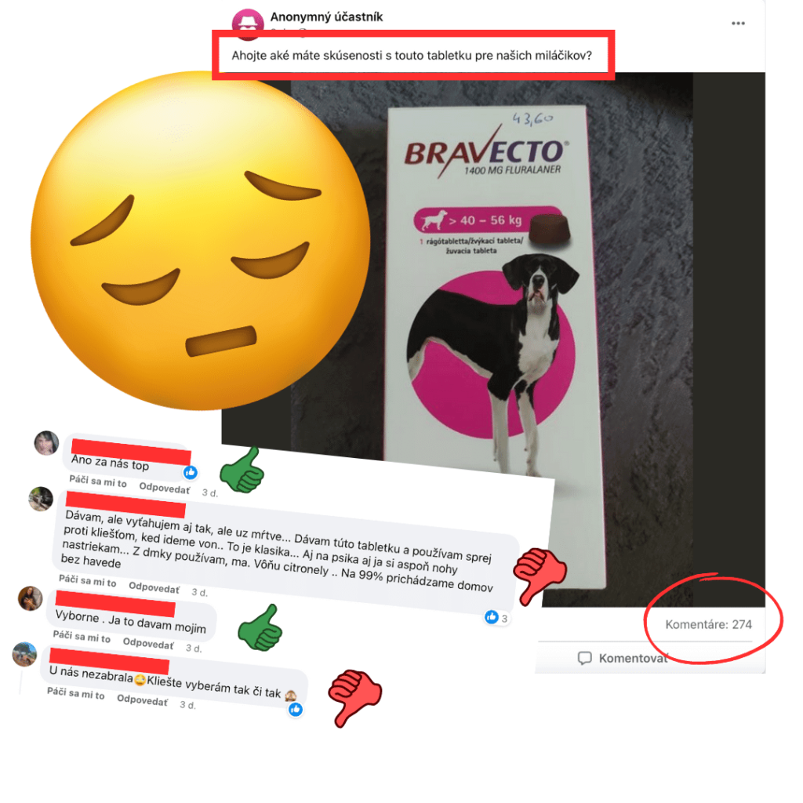
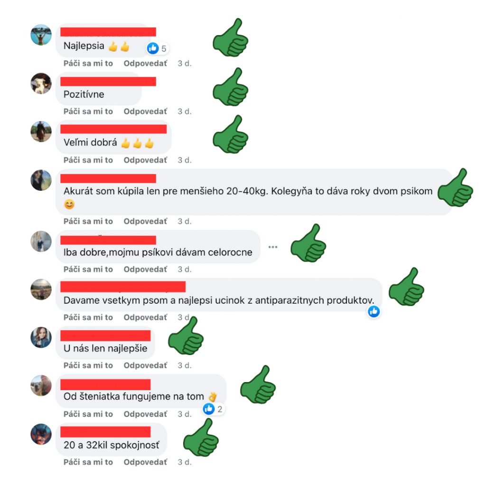
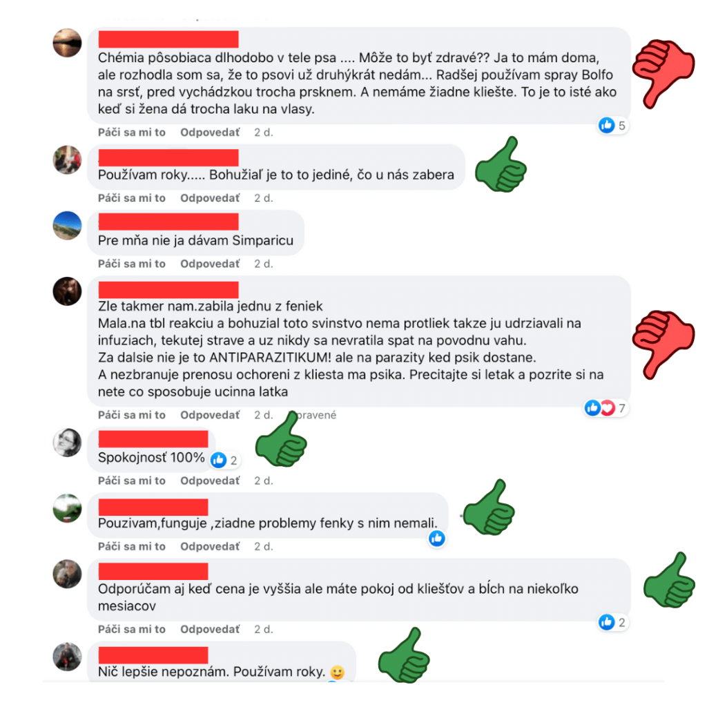
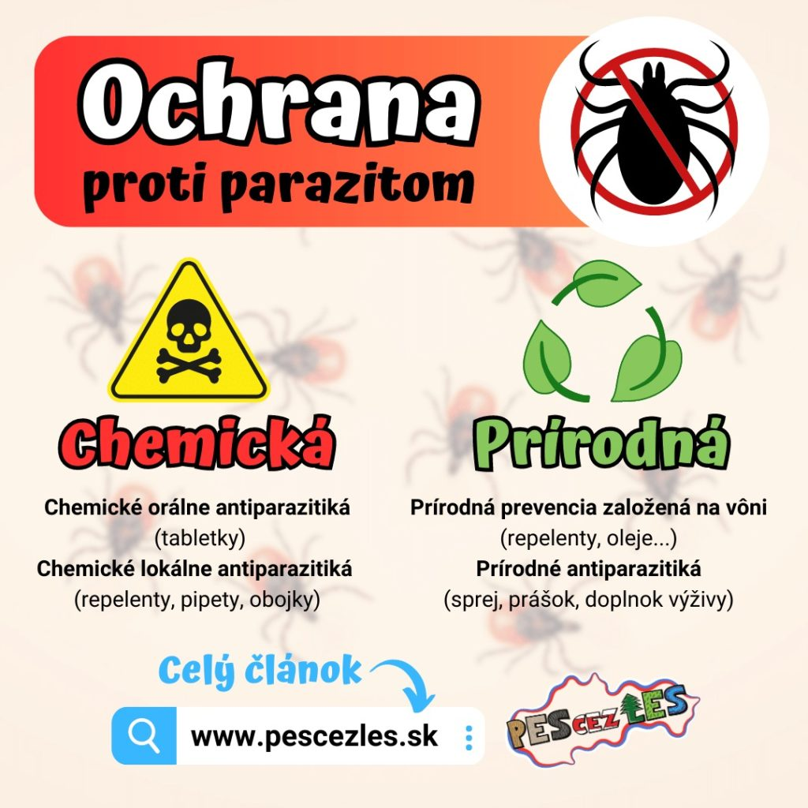
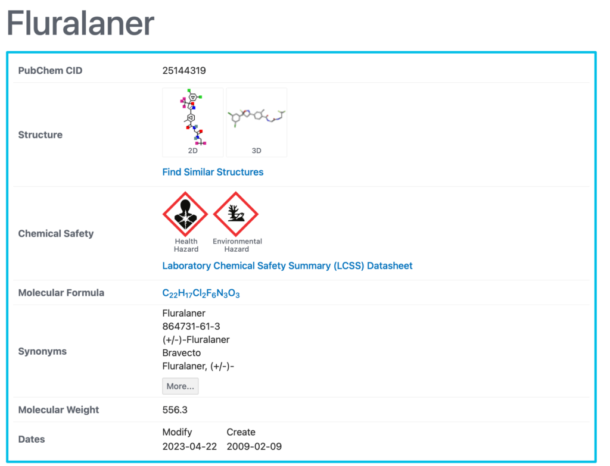
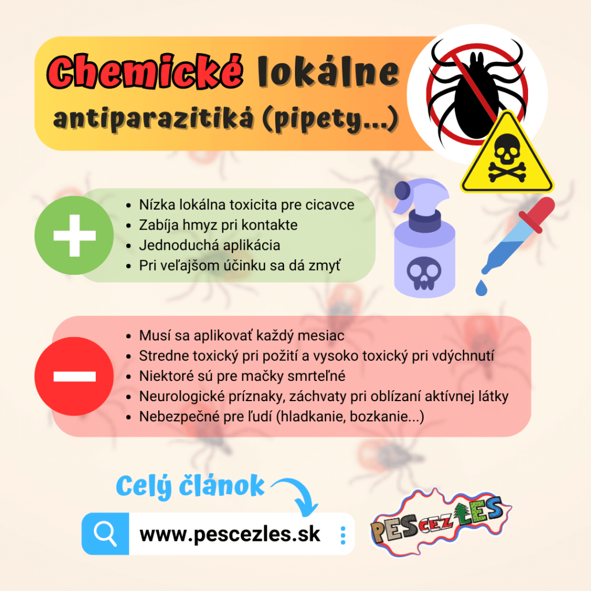
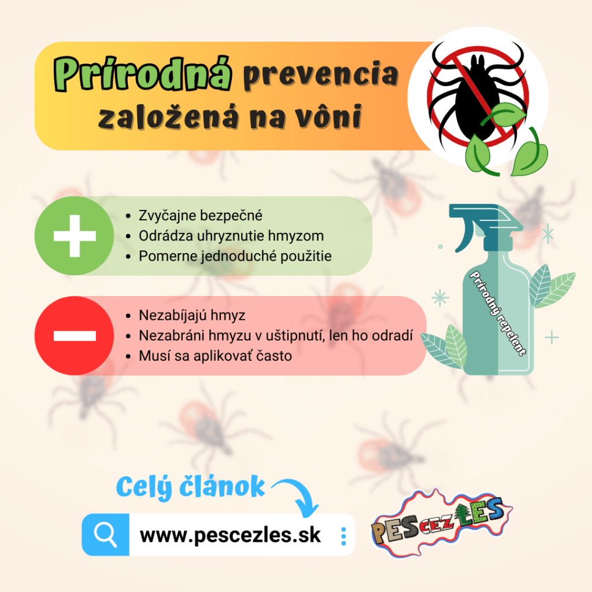
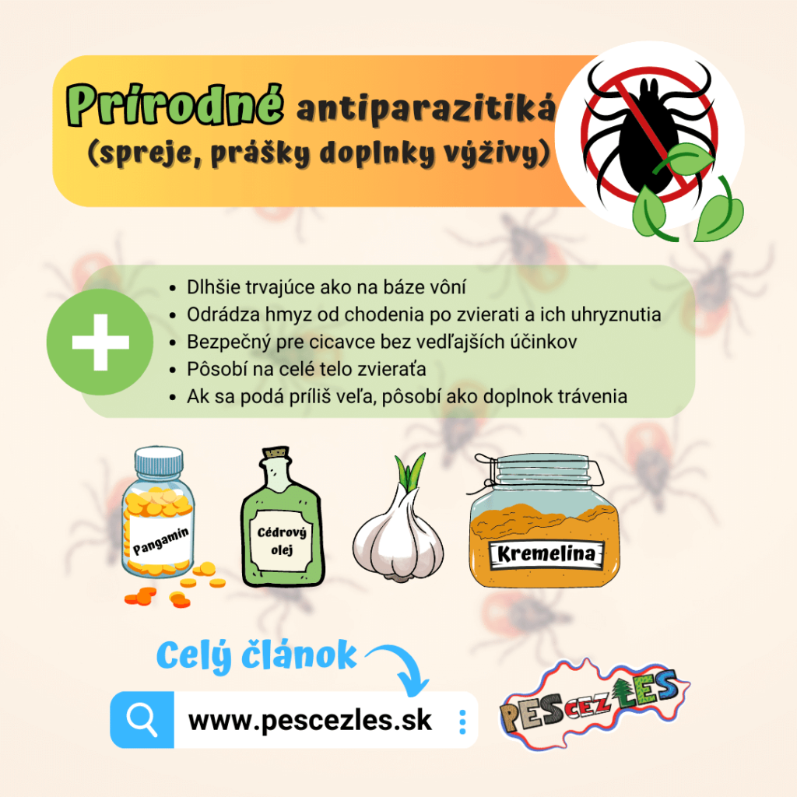
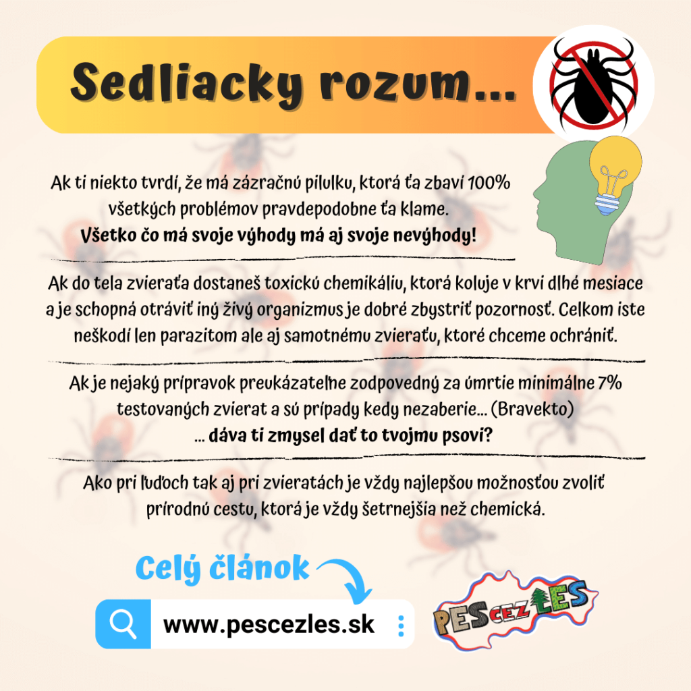
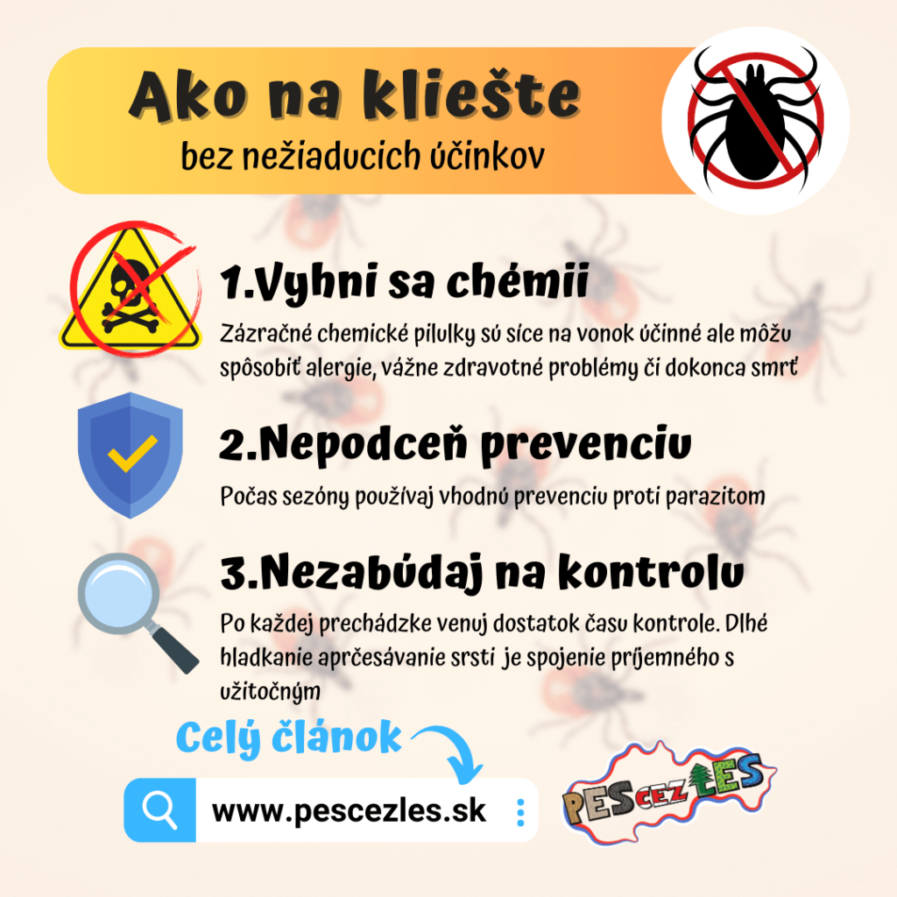

Opäť je tu to ročné obdobie! Slnko svieti, vtáky spievajú a kliešte lezúce na našich psoch nám spôsobujú paniku. Je prirodzené rozmýšľať nad prevenciou a spôsobmi, ako našich psov brániť voči týmto parazitom. V otázke prevencie sa však názory líšia naprieč celou psíčkarskou komunitou. Dokonca ani samotní veterinári nemajú v tejto téme jasno, a tak som sa rozhodol poskytnúť názor s triezvym uvažovaním a sedliackym rozumom. Myslím si, že na základe zdravého úsudku a skúseností sa viem k tejto téme vyjadriť a možno inšpirovať či pomôcť niekomu, kto v tejto téme stále tápa. Nepovažujte moje slová za svätú pravdu, vždy si informácie overte. Týmto článkom chcem každému psíčkarovi a hlavne psíkom úprimne pomôcť, a to je dôvod, prečo som sa rozhodol napísať článok. Ako sa ochrániť psa pred kliešťami?
Jedna baba povedala…
Na internete koluje milión informácií. Niektoré sú pravdivé, iné klamlivé a potom sú tu aj napríklad také, čo sa za pravdu síce považujú, ale v skutočnosti pravdou nie sú. Na internetových diskusiách som si začal všímať bezhlavé hromadné odporúčania na zázračnú pilulku proti kliešťom, o ktorej viem, že tak zázračná zasa nie je. Dokonca môže byť nebezpečná! Dobre mienená rada na internete tak môže narobiť riadne problémy.




Čím môžeme bojovať proti kliešťom?
Dnes existuje na trhu množstvo rôznych produktov. Mali by ste si však uvedomiť niektoré riziká s nimi spojené...
- chemické orálne prípravky
- chemické lokálne antiparazitiká
- prírodná prevencia založená na vôni
- prírodné antiparazitiká
Preberieme výhody a nevýhody každého z nich, aby ste sa mohli lepšie rozhodnúť, čo pri ochrane zvolíte vy.
Chemické orálne prípravky
Výhody:
- Jednoduché podávanie
- Účinnosť tri mesiace
- Rýchlo zabíja bodavý hmyz
- Prechádza krvným obehom a je v celom tele
Nevýhody:
- Mnoho závažných vedľajších účinkov vrátane záchvatov a smrti
- Škodca musí uhryznúť zviera
- Vyrobené s toxickými chemikáliami
- Nemôže sa podávať mladým zvieratám kvôli riziku toxicity
- Ak dostanú vedľajší účinok, nemôžu odstrániť príčinu
Tieto perorálne prípravky proti blchám a kliešťom na báze chemického jedu sú čoraz populárnejšie. Dodávajú sa vo forme tabliet a zvyčajne sa podávajú raz za tri mesiace. Chemikálie sa vstrebávajú do krvi a šíria sa po celom tele. Keď zviera uhryzne hmyz, otrávi sa. Tieto perorálne prípravky však majú mnoho závažných vedľajších účinkov vrátane ataxie (straty kontroly nad telesnými pohybmi), trasenia, záchvatov, zvracania – zoznam pokračuje. Všetky, ktoré sú na trhu, obsahujú chemické látky známe ako izoxazolíny. Tieto zlúčeniny blokujú nervové signály, čo spôsobuje, že postihnutý hmyz ochrnie a uhynie. Žiaľ, izoxazolíny nepôsobia len na hmyz, ale aj na nervový systém domácich zvierat, ktoré ich užívajú.
Napríklad Bravecto je bežný perorálny prípravok proti blchám a kliešťom, ktorý v súčasnosti podávajú mnohí majitelia domácich zvierat. Účinná látka v lieku Bravecto, Fluralaner, však od roku 2013 (do 2018), keď bola uvedená na trh ako pesticíd, spôsobila podľa informácií FDA najmenej 783 úmrtí zvierat, a to sú len tie, ktoré boli hlásené oficiálnou cestou.

Bola vykonaná štúdia o jeho bezpečnosti s 294 psami, ktorým bol podaný Bravecto. V štúdii sa uvádzalo, že „len" 7,1 % z nich malo vedľajšie účinky vrátane letargie, zvracania, hnačky a zníženej chuti do jedla. Možno to neznie ako veľa, ale zvážte vzorku 10 000 domácich zvierat, čo je približný počet domácich zvierat v meste s 30 000 obyvateľmi, ktorým boli podané tieto chemikálie. Na základe tejto štúdie a správ od FDA by to znamenalo, že 490 z nich by malo menšie reakcie, ďalších 196 by malo závažné vedľajšie účinky a ďalších 14 by počas 18 mesiacov uhynulo. Medzi menej závažné vedľajšie účinky patrí napríklad zvracanie a hnačka, rozšírené zreničky, podráždenosť atď. Medzi závažné vedľajšie účinky by okrem iného patrila letargia, krvavá stolica, poruchy nervového systému a srdca. Okrem týchto hlásení bolo zaznamenaných viac ako 7 000 hlásení o tom, že lieky neúčinkujú tak, ako majú (nezabíjajú blchy a kliešte počas obdobia dávkovania).
Ak svojmu zvieraťu podáte túto liečbu a objavia sa u neho vedľajšie účinky, chemickú látku z jeho tela nemôžete odstrániť. Môžete však urobiť niekoľko vecí, aby ste sa im pokúsili pomôcť odstrániť príčinu. Podávanie Diatomitu (kremeliny) potravinárskej kvality môže viazať chemické látky a pomôcť im prejsť tráviacim traktom bez toho, aby sa ďalej vstrebávali...

Chemické lokálne antiparazitiká
Výhody:
- Nízka lokálna toxicita pre cicavce
- Zabíja hmyz pri kontakte
- Jednoduchá aplikácia
- V prípade výskytu vedľajších účinkov sa dá zmyť
Nevýhody:
- Musí sa aplikovať každý mesiac
- Stredne toxický pri požití a vysoko toxický pri vdýchnutí
- Niektoré sú pre mačky smrteľné
- Neurologické príznaky, záchvaty pri oblizovaní účinnej látky
- Nebezpečné pre ľudí (hladkanie, bozkávanie...)
Lokálne antiparazitiká sú najbežnejšou formou boja proti blchám a kliešťom. Vyžadujú si nanesenie najčastejšie tekutým antiparazitikom na srsť zvieraťa. Pohyby domácich zvierat spôsobujú, že sa chemikálie rozptýlia po celej srsti zvieraťa. Tieto prípravky ničia škodcov pri kontakte, čo znamená, že hmyz nemusí domáce zviera uhryznúť, aby bol otrávený. Pri takomto dermálnom podaní majú nízku toxicitu pre hostiteľa a môžu sa u nich prejaviť menšie vedľajšie účinky, ako je podráždená, svrbivá koža a začervenanie.
Keď sa však antiparazitikum rozšíri na celý povrch zvieraťa, umožní im to prístup k jeho olizovaniu. Aj ostatné domáce zvieratá v domácnosti a ľudia, ktorí ich hladkajú, sú vystavení riziku priameho kontaktu. To môže byť problém, pretože pri požití sú tieto pesticídy klasifikované ako stredne toxické a môžu spôsobiť vedľajšie účinky, ako je zvracanie, nevoľnosť, hnačka a letargia. Takisto pri vdýchnutí sú klasifikované ako vysoko toxické a môžu spôsobiť ataxiu, tras, poškodenie pečene a prípadne smrť.
Obojky proti kliešťom, ktoré sú napustené chemikáliami, majú každoročne na svedomí mnoho životov v riekach či jazerách. Chemikálie sú tak toxické, že ryby hynú prakticky ihneď, ako sa im látka dostane do tela, aj keď len v malej koncentrácii!
Prírodná prevencia proti blchám založená na vôni
Výhody:
- Zvyčajne bezpečné
- Odrádza uhryznutie hmyzom
- Pomerne jednoduché použitie
Nevýhody:
- Nezabíjajú hmyz
- Nezabráni hmyzu v uštipnutí, len ho odradí
- Musí sa aplikovať často, zvyčajne každý deň
Tieto typy prevencie proti blchám a kliešťom sa zvyčajne dodávajú v dvoch formách: v spreji alebo v žuvacích tabletách. Obe sa zvyčajne skladajú z bylín a esenciálnych olejov, ktoré blchy a kliešte nemajú radi, ako napríklad citrónová tráva a rozmarín. Blchy nezabíjajú, ale vytvárajú vôňu okolo domáceho zvieraťa, ktorú hmyz nemá rád. To odradí hmyz od toho, aby liezol na domáce zvieratá, alebo predĺži čas, kým sa prisaje, čo môže napomôcť nášmu odhaleniu alebo vytraseniu parazita samotným zvieraťom. Zvyčajne pomerne rýchlo vyprchajú a je potrebné ich často opakovať, aby zostali účinné.
Tieto výrobky sa vo všeobecnosti považujú za bezpečné, pretože sú na rastlinnej báze a prírodné. Nie každý prírodný produkt je však úplne bezpečný! Pri výrobe mnohých esenciálnych olejov sa používajú škodlivé rozpúšťadlá, ako je propylénglykol. Odporúča sa uistiť sa, že esenciálne oleje v produktoch nie sú vyrobené s použitím týchto chemikálií. Najlepším procesom na výrobu čistého a kvalitného esenciálneho oleja je parná destilácia; overte si, či výrobca vie, aký proces sa v jeho esenciálnych olejoch používa.
Existuje aj mnoho esenciálnych olejov, ktoré sú škodlivé pre domáce zvieratá, pričom mačky sú na ne obzvlášť citlivé. Napríklad čajovníkový olej je veľmi obľúbený, ale je toxický pre pečeň mačky, pretože ho nedokáže metabolizovať. Ďalším príkladom je olej z cédrového dreva. Ak vo výrobku vidíte cédrový olej, uistite sa, že nejde o cédrový olej z červeného cédra západného, pretože tento olej môže byť toxický kvôli vysokému obsahu fenolov.

Prírodné antiparazitiká
Výhody:
- Dlhšie trvajúce ako na báze vôní
- Zabíja blchy a kliešte
- Odrádza hmyz od chodenia po domácich zvieratách a ich uhryznutia
- Bezpečný pre cicavce bez vedľajších účinkov
- Pôsobí na celé telo zvieraťa
- Ak sa podá príliš veľa, pôsobí ako doplnok trávenia
Prírodné antiparazitiká sa dodávajú vo forme spreja, napríklad olej z cédrového dreva. Ďalšou formou, ktorá existuje, sú prírodné antiparazitiká, ktorými kŕmite svojho domáceho miláčika. Účinnou prevenciou je aj užívanie pivovarských kvasníc alebo cesnaku, ktorý spôsobí špecifickú arómu psej pokožky, ktorá odpudzuje parazitov.
Kremelina (Diatomit)
Diatomit dostáva vlastnú kategóriu, pretože funguje veľmi jedinečným spôsobom. Na rozdiel od všetkých ostatných výrobkov, ktoré ničia hmyz, ho nezabíja otrávením. Namiesto toho pôsobí na hmyz abrazívne a keď sa pohybuje po tomto prípravku, stiera voskový povlak jeho exoskeletu a odvádza z neho vlhkosť. Tento proces v podstate dehydruje hmyz, až kým nezomrie. Tento postup je účinný proti všetkému hmyzu, dokonca aj proti mravcom a malým švábom! Diatomit je skvelý produkt, ktorý môžete mať po ruke v celom dome.
Ak ho chcete použiť na svojho domáceho miláčika, jednoducho ho na neho nasypte a votrite do jeho srsti, kým sa nedostane na kožu. Môže byť ťažké dostať sa pod srsť dlhosrstých plemien, ale výborne funguje na pelechy a nábytok domácich zvierat. Trochu ho môžete nasypať aj pozdĺž podlahových líšt a dverí, aby ste zabránili vniknutiu hmyzu. Keďže ide o prášok, je potrebné ho znovu aplikovať, keď opadne alebo keď sa zviera namočí. Diatomit je bezpečný zvonka aj zvnútra (môže sa jesť), pokiaľ je to potravinárska verzia!

Doba prenosu ochorení
Najväčším strašiakom pri tejto hávedi sú ochorenia, ktorými môžu infikovať našich psov. Našťastie natrafiť na infikovaného kliešťa je podľa štatistiky skôr vzácnosť. Niektorí psi majú za svoj život prisatých stovky kliešťov a vyhnú sa akejkoľvek nákaze, no niektorí jedinci môžu dostať ochorenie aj z jedného prisatého kliešťa.
48–72 h
Borelióza
~36 h
Babezióza
24 h
Anaplazmóza
Ako to je naozaj? Sedliacky rozum
Osobne som polonahý prešiel celé Slovensko. Trvalo mi to 42 dní. Spal som vonku na zemi a väčšinu dňa som strávil brodením sa cez lesy či vysoké trávnaté lúky. Napriek tomu som za celý čas nemal na sebe prisatého ani jedného jediného kliešťa! Naopak kamoši alebo ľudia, ktorých som stretával, sa mi sťažovali, že kliešťov vyberajú pravidelne... Chcem tým len povedať, že tak ako aj pri nás, tak aj pri psoch platí, že kliešť si obeť vyberá podľa sympatií. Jednoducho niekoho kliešte milujú a niekoho nenávidia. Je treba to spomenúť, pretože ľudia to neberú do úvahy pri objektívnom posudzovaní a odporúčaní rôznych prípravkov proti kliešťom... Potom vznikajú napríklad nedorozumenia typu: Mne tento prípravok funguje! Bude určite aj tebe! (pritom to vôbec nemusí byť prípravkom, ale krvou psa alebo inými faktormi...)
Netajím sa tým, že som zástanca prírodných riešení, a preto neodporúčam nikomu, aby používal chemické prípravky, a to nielen proti kliešťom. Chápem, že sa to javí ako zázračné riešenie plné výhod, no treba si uvedomiť, že účinná látka je definovaná ako toxický jed. Síce účinne zabije parazitov, no chemikálie pôsobia aj priamo na psa. Preto je treba dobre porozmýšľať, či chceme do psa dobrovoľne dávať jed, ktorý ho môže zabiť, alebo prebrať zodpovednosť a nájsť vhodné alternatívne riešenie. Aj ja som si prešiel frustráciou a panikou, keď som každý deň vytáčal z Hektora tú pricucnutú háveď. Priznám sa, že som raz zúfalý sedel vo veterinárnej ambulancii a bol som rozhodnutý dať Hektorovi Bravecto. Sedel som v prázdnej čakárni asi polhodinu a popri čakaní som mal čas čítať zahraničné diskusie, kde ľudia uvádzali neurologické ťažkosti a úmrtia psov po užití tejto zázračnej tabletky. Nakoniec som po polhodine z čakárne odišiel. Kúpil som si prírodný repelent a začal sa o túto tému viac zaujímať. Aj keď každý rok nejakého kliešťa vytiahnem, dávam si záležať na pravidelnej kontrole a tiež sledujem, ktorá látka má nejaký účinok. Aktuálne používam domáci repelent s prírodnými zložkami a túto sezónu plánujem vyskúšať kremelinu, o ktorej som písal :)

Účinná látka v tablete Bravecto.
Mne osobne nedáva zmysel dávať do psa jed, ktorý mi síce uľahčí starosti s kliešťami, no na druhej strane riskujem vážne neurologické ťažkosti, ochorenia či dokonca smrť otrávením. Všetko, čo na prvý pohľad vyzerá veľmi dobre, v sebe často ukrýva závažný háčik, a tak je tomu aj v tomto prípade.
Ako na kliešte bez nežiaducich účinkov
Pravdou je, že kliešť sa zakúsne, keď chce, a môžeme sa postaviť aj na hlavu... Všetky prípravky, obojky či repelenty slúžia len na to, aby kliešťa odradili. V praxi to pre kliešťa znamená iba to, že na psovi hľadá vhodné miesto a vyhýba sa miestam, ktoré mu nevoňajú. Čas prisatia závisí hlavne od toho, či je psík pred parazitmi chránený. Ak áno, kliešťu trvá dlhší čas, než sa prisaje, a za tú dobu ho môže psík striasť alebo si kliešťa môže všimnúť majiteľ.
Mnoho ľudí si myslí, že tabletka pôsobí antiparaziticky = odpudzujúco, a kliešte sa psovi vyhýbajú. Nie je to pravda. Kliešte sa prisajú bez problémov, no vzápätí sa otrávia jedom, ktorý koluje v krvi, vyschnú a odpadnú. Navonok to vyzerá, že psík nemá ani jedného kliešťa, ale pravdou je, že len odpadli skôr, ako ich majiteľ stihol spozorovať.
Môj recept asi nepoteší pohodlných ľudí... Cez sezónu praktizujem prírodnú prevenciu + dôkladnú kontrolu po každej návšteve lesa a úspešne sa vyhýbam chémii. Je to menej praktické, no som presvedčený, že to so sebou prináša viac výhod ako nevýhod. Každý však rozhoduje o psíkovi sám, a preto je na každom z vás, čo svojmu psíkovi doprajete. Prírodnú ochranu a dlhé hladkacie kontroly alebo zázračnú tabletku bez starostí. Je to na vás...

Zdroje: (1) FDA správa o izoxazolínoch | (2) Štúdia bezpečnosti Bravecto (294 psov) | (3) NPIC – imidakloprid